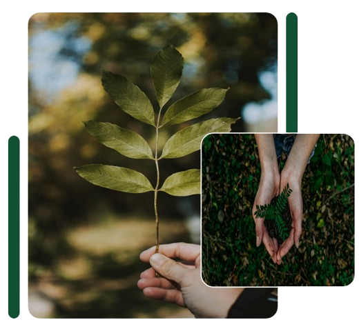

Visi
Menjadi platform dimana masyarakat dapat belajar, memantau, dan juga memahami pentingnya 3R, bukan hanya sekedar membuang sampah pada tempatnya.

Misi
Menyediakan edukasi yang mudah dipahami tentang masalah lingkungan dan pentingnya prinsip Reduce, Reuse, dan Recycle (3R).
Membantu masyarakat memantau kontribusi sampah mereka melalui sistem tracking yang informatif dan transparan.
Mendorong perubahan kebiasaan masyarakat agar lebih peduli terhadap lingkungan melalui solusi dan rekomendasi yang praktis.